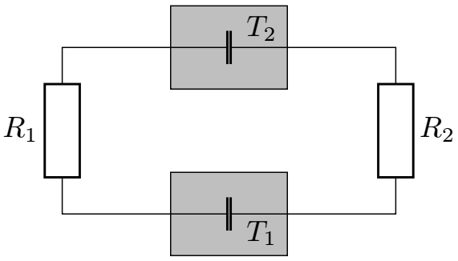
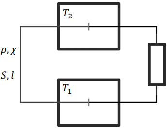

X19 (2019) — English translation
Thermoelectricity is the general name for the phenomena of direct conversion of electricity into heat and vice versa, heat into electricity. Thermoelectricity is generally based on contact potential differences in conductors and semiconductors. The work function of an electron leaving a material varies for different conductors, and therefore there is an effect such as a contact potential difference. The contact potential difference, as a rule, depends only on the materials that are in contact with each other. Depending on the temperature, the contact potential difference may change. This dependence can be described by a simple formula (temperature in Kelvin): $$U(T)=\beta+\alpha T $$ Здесь и далее считать, что напряжение в формуле – $\textbf{potential of the first metal minus the potential of the second}$.
Among other thermoelectric effects, one of the most interesting is the Peltier effect. The Peltier effect is that when current $I$ passes through voltage $U$, thermal power $UI$ is released at the contact (direct Peltier effect). But if the electrical circuit is assembled in such a way that the current passes through the contact potential difference in the opposite direction, i.e. the current will flow from the lower potential to the higher one, then the contact will be $\textbf{забирать}$ thermal power $UI$ from the environment (reverse Peltier effect).
Two wires made of different materials with resistance $R_1$ and $R_2$ pass through two thermally insulated vessels with water. At the contact, the potential of conductor $1$ is always higher than that of conductor $2$. The wires have no electrical contact either with the water or with the material of the vessels; their thermal conductivity is low. Vessel temperature $T_2>T_1$.

Let both vessels be filled with water of mass $m=1~\text{kg}$. The first vessel has a temperature of $T_{1,0}=0^{\circ}\text{C}$, and the second one has a temperature of $T_{2,0}=100^{\circ}\text{C}$. The coefficient $\beta$ from the previous part takes on the minimum value.
Based on the above diagram, you can assemble a simple thermopile. Let the second vessel contain water at $T_2=273~\text{К}$, and the first vessel contain liquid nitrogen at atmospheric pressure, its temperature equal to the boiling point $T_1=77~\text{К}$. In the following, use the notation $\Delta{T}=T_2-T_1$. Consider that liquid nitrogen and water are constantly being added to the system, and ice does not freeze on the wires.

The transfer of energy as a result of thermal conductivity is described by Fourier's law. The energy flux density $q$ through the wire cross-section is determined by the thermal conductivity of the wire material $\chi$ and the temperature distribution along the length $T(x)$: $$q=-\chi\cfrac{dT}{dx} $$
Source: https://pho.rs/p/319